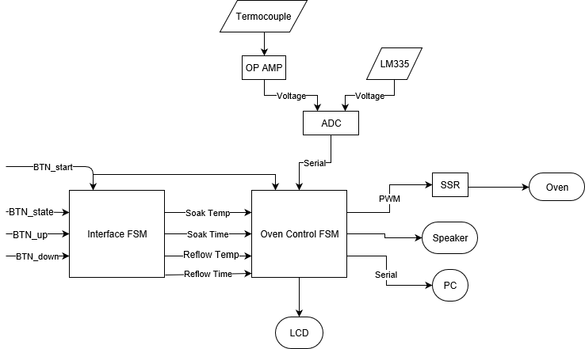
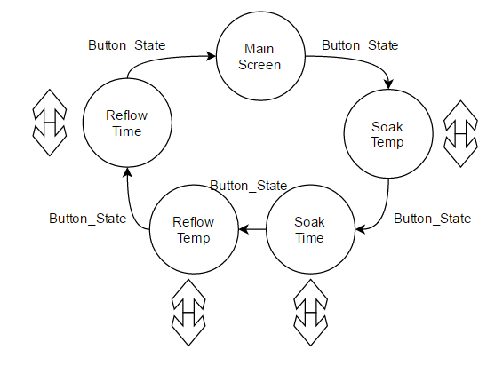

March 2, 2017
ELEC 291 - Team B6
Nicholas (Scott) Beaulieu Geoff Goodwin-Wilson Muchen He Larry Liu Lufei Liu Wenoa Pauline Teves
Reflow Oven Controller1. IntroductionObjectiveSpecifications2. InvestigationIdea GenerationDesign InvestigationData CollectionData-SynthesisAnalysis of Results3. DesignImplementation of Design processNeeds and Constrain IdentificationProblem SpecificationSolution GenerationSolution EvaluationDetailed DesignsOP AMP CalculationsInterfaceData Visualization SoftwareSSR Power ControlSendVoltage ProgramSolution AssessmentTemperature MeasurementOP-AMPController Performance4. Lifelong Learning5. ConclusionAppendix IAppendix IIAppendix IIIReferencesBibliography
To design, build, program and test a Reflow Oven Controller that fastens SMT components to a PCB while implementing extra functionalities. One such functionality being an LCD user interface displaying pertinent information such as the current state of the reflow process, current temperature and total time elapsed since the process began.
Hardware Information
Main Chipsets
Associated Parts for Chipsets and Hardware
Team-Designed Hardware
Op Amp circuit
LED Temperature Indicator
Temperature Monitoring Hardware
Software Information
AT89LP52 Assembly Functions:
Processing Functions
Display and Sound
Built in Speaker
Built in LCD Display
Built in LED Display

Figure 1.1: Block diagram overview of project's hardware and software design
Our team generated ideas by identifying the needs and stakeholders of our project. In the case of our soldering oven, we were required to generate a certain output, or voltage, given set parameters (reflow time, reflow temperature, soak time, and soak temperature). With these requirements in mind members of our team generated different solutions that would meet the required outputs. Models of various designs were also created to better communicate ideas between members. Therefore through reiteration and revision, comparison, elimination of different designs and testing for efficiency our team was able to implement what we believed would be the most efficient design for our Reflow Oven Controller project.
We made an inventory of all components that were provided to us; they were checked and compiled into an excel sheet for easier look-up. The required datasheets and spec-sheets were also downloaded from the internet. These documents assisted us in designing and assembling the hardware.
Our circuit boards included breadboard prototypes, an Op Amp (soldered on perfboard), an LED bar display (soldered on perfboard) and a seven-segment LED display (soldered on perfboard) which were thoroughly tested*. We tested by measuring that all voltages and currents were within the range we expected.
Additional Excel sheets were made to log the Device-Under-Testing (DUT). Information including initial reflow setting and temperature profiles were recorded. After several trials, we were able to see predictable readings.
Schematics for the states components are in Appendix I
Our team collected data during the testing and debugging stages of our design through the use of lab resources and tools. Listed below are some of the tools we used:
Additionally, our team compared the accuracy of our data through testing and recording results, and comparing the consistency of the test results. This will be explained in greater detail below under Data Synthesis.
Our team synthesized data and information to reach appropriate conclusions through consistent testing of our soldering oven controller, obtaining results through our methods detailed in Data Collection, and comparing the consistency of those results to expected values from design documents and circuit diagrams.
Additionally, we tested our controller and user interface by simply uploading our software (listed in Appendix II: Software) to the controller and checking for states and values that appeared on the LCD screen.
Our team appraised the validity of conclusions through rigorous testing and troubleshooting using a multimeter and comparing to expected results. Data was synthesized via testing throughout our design process. This was to ensure predictable behavior and concise results. During the final stages of our design process iterative test cases were created to ensure accurate results (see Appendix III: Test Cases Table).
We also tested corner cases such as improper placement of temperature sensor, or cancellation request from the user during reflow process. These tests were to ensure that our safety features were functioning as intended.
We identified the requirements of our design with the help of our lab manual 1 and in-class lectures 23. These requirements included:
After this, members of our team began generating ideas and presenting them to the team with the use of visual block diagrams as well as state-machine diagrams. We recorded multiple ideas on Trello-an online board-where we also kept track of our progress and to-do lists. Our team considered ideas based on practicality and efficiency to reach the objectives of our final project. During our design process we would reiterate and revise our software through GitHub where we would undergo additional tests and debugging, particularly when merging different blocks of code together.
The targeted stakeholders for this project are those who use soldering ovens, such as professors, students, and electronic hobbyists. Due to our wide range of stakeholders, we decided customization to suit a user’s preferences is vital. We also decided it was necessary to ensure safe operation. In order to have the best user experience, we identified the need for a fluid interface. Our overall goal was to create a working F38x microcontroller board for future projects.
The constraints for this controller arise from using a thermocouple to monitor interior oven temperature (restrictions in materials), controlling the oven through SSR, and programming the firmware in 8051 Assembly on CrossIDE in order to flash to our ATMEL microcontroller (AT89LP52) 4.
Customization of the controller can be accomplished through push buttons to set the adjustable parameters such as soak temperature, soak time, reflow temperature and reflow time as suitable for the microprocessor system in this project.
To ensure the user’s safety a failsafe can be implemented to ensure the oven does not continuously heat up in the event that the thermocouple is incorrectly placed. In case this is not sufficient, a manual stop push button can stop the soldering process at any point of operation.
The user interface is created from a combination of an LCD display of temperature and time, data output to a PC where the process can be presented in a more visually appealing manner and sound effects to indicate state transitions and capture the user’s attention when needed.
Our solution to meet these stakeholder needs was to create an FSM for the oven and a separate FSM where the user can use push buttons to switch between parameters and adjust them through the same manner. Push buttons will also be used to start and stop the oven. The FSM allows LCD update in each state, but the data output to the PC must be faster. This could be done either in the beginning of FSM or through a timer interrupt.
For measuring the temperature in the oven, either an ice bath or an LM3355 can be used as the cold junction for the thermocouple.
A smooth user interface can be implemented on the PC. We considered different tools to display transitions such as Python, MATLAB, and Processing (a language based on Java for graphic and data visualization applications). In addition, we considered using a 7-segment display and an LED bar display to enhance the user experience.
To calculate what values our required components would be in our Op Amp; we started by calculating the amplification factor. To do that we decided upon a temperature range of 10 to 400 degrees Celsius in conjunction with our amplified voltage range of 0.1 to 4 volts. Then using a measured voltage of 0.41 millivolts for a temperature of 10 degrees Celsius we could calculate the amplification factor by dividing 0.1 volts by 0.41 millivolts for an amplification factor of 243.9 V/V. We could then finally relate the values through amplification factor equaling the first resistor value divided by the second resistor value. Solving while assuming a resistance of 100 Ohms for the second resistor gave us a final value of 24300 Ohms for the first resistor.
Our interface featured an interactive display of selectable parameters including soak time, temperature, reflow time and temperature. This was implemented through a finite state machine separate from the soldering process. Initially on the main screen a single push button connected to P2.5 signals the transition into each parameter cycling through all parameters and back to the main screen. In each screen two more buttons connected to P2.6 and P2.7 were respectively set to increment and decrement the values of the parameter. These changes automatically update the stored variables.
We decided on using a FSM in order to reduce the buttons and maintain a simple yet effective user interface. For each state in the FSM we considered which buttons to poll for and the associated tasks to be completed. For example, in the code for the reflow time state we polled for each of the three buttons mentioned above.

Figure 3.1: Finite state machine diagram for interface
The software that runs on the computer communicates with the microcontroller via SPI. The microcontroller sends packets of critical information consisting of {current state, current temperature, oven power} on every timer-1 interrupt (which is set to 115200 baud). The information is then handled by the serial ports on the computer and parsed by the software we wrote.
We had the option between Python with MatPlotLib, MATLAB, Processing, and p5.js (Processing on JavaScript). Due to lack of customizability Python and MATLAB were immediately eliminated as part of our solution. We considered using p5.js as it can be deployed to a web server and 100% of devices with a web-browser can run the web-app. However, additional complications arose as the microcontroller needs to communicate with computer hardware through a localhost server then to the browser via websockets before it can deliver its information. Due to previous we decided it was not worth our time pursue the use p5.js.
We chose Processing as our primary language because it offers less-verbose syntax and easy visualization integration. Since this language is based off of Java we can use many Java-compatible libraries. This also means that this code can run on virtually any device with the proper dependencies installed.
The program features various pages of information to display. The main screen of the program, while giving an overview of the reflow process, intends to be more aesthetically pleasing given its colors and animations. There are hexagonal grids around a center dial that indicates current stage in the reflow operation. The dial turns and its radius is a function of the temperature from the sensor. Other information such as temperature and oven power are also displayed here.
Other screens contains strip charts that show temperature reading over time and the overall thermal profile. The output data was a quintessential aid to our test and analysis.
The SSR was controlled through a pulse width modulation (PWM) function which executed roughly every half second in the timer 2 interrupt service routine. In order to achieve stable current input into the SSR a BJT circuit using an STMicroelectronics 2N3904 NPN Transistor6 was added to the hardware setup to amplify the current. Once a logic 1 or 0 value is guaranteed every time the SSR control output pin switches values it can be used as a reliable platform to build the pulse width modulation function. The premise of PWM was based on a loop incrementing from 0 to 10, and a power value, selected by the programmer, between 0 and 10. After 0 is defined as minimum power and 10 is defined as maximum power, any number in the range 1 to 9 is a power percentage of 10 to 90 percent respectively. This is achieved because if a number is selected from the valid range and the PWM function is constantly looping from 0 to 10, once the current iteration variable matches the chosen power number, the SSR controller can be turned on/off.
Our SendVoltage program obtains voltage values and converts them to temperature values from both the Thermocouple and the LM335 and sends them as one variable through a single SPI channel for our FSM. To do this we connected the output of the Thermocouple and the LM335 with Channel 0 and Channel 1 of the ADC7.
For them we programmed two separate pieces of code (LM and Th in the code below) to capture voltage values for the Thermocouple and the LM335 and then a flag bit to switch between the two. We named the macro we used to switch from Channel 0 and Channel 1 Read_ADC_Macro. We then converted the voltages and added the Thermocouple and LM335 temperatures to get an accurate temperature reading of the oven and finally save the final temperature as a variable for the FSM to use. To make sure our values were correct when debugging we sent the read voltages through the serial port and displayed it on the screen using PuTTy. We then integrated the working SendVoltage program to the main program where we encountered a problem. The problem we encountered was trying to use the lcall instruction to invoke SendVoltage in Timer 2.
The problem was caused because timers 0 and 2 conflicted resulting in a program halt. Our solution to this problem was instead calling the SendVoltage function in the setup region of the FSM.
xxxxxxxxxxSendVoltage: jnb LM_TH, Th ; jump to Th initiallyLM: mov b, lcall ADC_get lcall LM_converter clr LM_TH LCD_cursor(2, 7) lcall add_two_temp ; two temp Send_bcd(bcd+1) ; display the total temperature Send_bcd(bcd+0) lcall print_comma lcall print_power lcall Switchlineret ; return to interruptTh: mov b, #1 ; connect thermocouple to chanel1 lcall ADC_get ; Read from the SPI lcall Th_converter ; convert ADC TO actual value setb LM_TH Send_BCD(state) lcall print_comma ljmp SendVoltageWe decided to use the temperature reading from an LM335 temperature sensor as our cold junction (reference) of the thermocouple. We examined our temperature reading by comparing it with the temperature reading from a given python program. The LM335 provided us with a better result as the tolerance of using an ice bath for cold junction of the thermocouple could potentially exceed the max acceptable error degrees.
For this project the oven temperature ranges from 25 to 235 degrees Celsius, and the output of our OP07CP Op Amp8 ranges from 0.1V to 4V using an LMC7660IN9. To achieve all possible temperatures in the desired range, we multiplied the Op Amp voltage by 100 to obtain temperature readings from 10 to 400 degrees Celsius which satisfied the requirements. This range can also indicate when there is a risk of burning the PCB when the temperature goes above 235 degrees.
We conducted sufficient amount of testing of the whole system before soldering the F38x boards. In the tests, we simulated our controller based on a real soldering configuration. We first tested if state changes occurred correctly based on temperature and time. Then we tested the soak temperature to make sure it stayed at a relatively constant temperature of 150 degrees, the threshold temperature for the state. However, for six test cases, our soak temperature ended up staying around 160 degrees with 20 percent of power output, above the expected temperature. We came up with two alternative solutions: to keep the threshold temperature as 150 degrees and turn the oven off for the soak period, or to change the threshold temperature to 140 and set the power output to 10 percent.
After conducting tests for both cases, our results showed that the second solution maintained a more steady temperature closer to 150 degrees during the soak period. We used this method for the reflow state as well. The results from our tests are shown in Appendix II: Test Cases Table.
With this reflow oven controller project, our team employed various technical concepts from prerequisites such as programming and hardware design skills. We found the courses ELEC 201 and CPEN 211 to be particularly useful in solving the circuit for designing the op amp and designing the finite state machine respectively.
Our extra designs and inclusion of the 7-segment LED display displayed a knowledge gap. We took this opportunity to learn more about shift registers, the difference between common cathode and common anode configurations for LEDs, and circuit design to affix all of the LEDs to our prototypes. In order to understand how to program the 7-segment displays, Geoff Goodwin interviewed a technician at RP Electronics and conducted research online.
From this we gained experience with embedded systems, circuit analysis, hardware design and construction which will provide valuable insight throughout our time as electrical engineering students as well as our future careers.
Our soldering oven is designed to solder SMT components with user-set parameters while implementing extra functionalities, such as a bar of LED’s that light up according to ranges of temperatures, a 7-segment display showing the total elapsed time of the reflow process. Our design ensures that the process be done safely with the implementation of our safety features, such as cases where the temperature sensor is not present inside the soldering oven, or when the user must stop the reflow midway through the process.
Despite delays with software, such as errors when combining different sections of source code, and delays with hardware, such as the learning process for 7-seg displays, the soldering oven controller was a success. The work spent on our soldering oven project totals to 65 hours.
Hardware Schematics
Software
Software source code can be found on GitHub
Test Case Table
CTS Corporation,"ATS22B-E Quartz Crystal," ATS/ATS-SM Series Quartz Crystal Datasheet, Unknown Publishing Date [Revision L]
CUI Incorporated,"CEM-1203(42) Magnetic Buzzer," CEM-1203(42) Datasheet, Nov. 2006